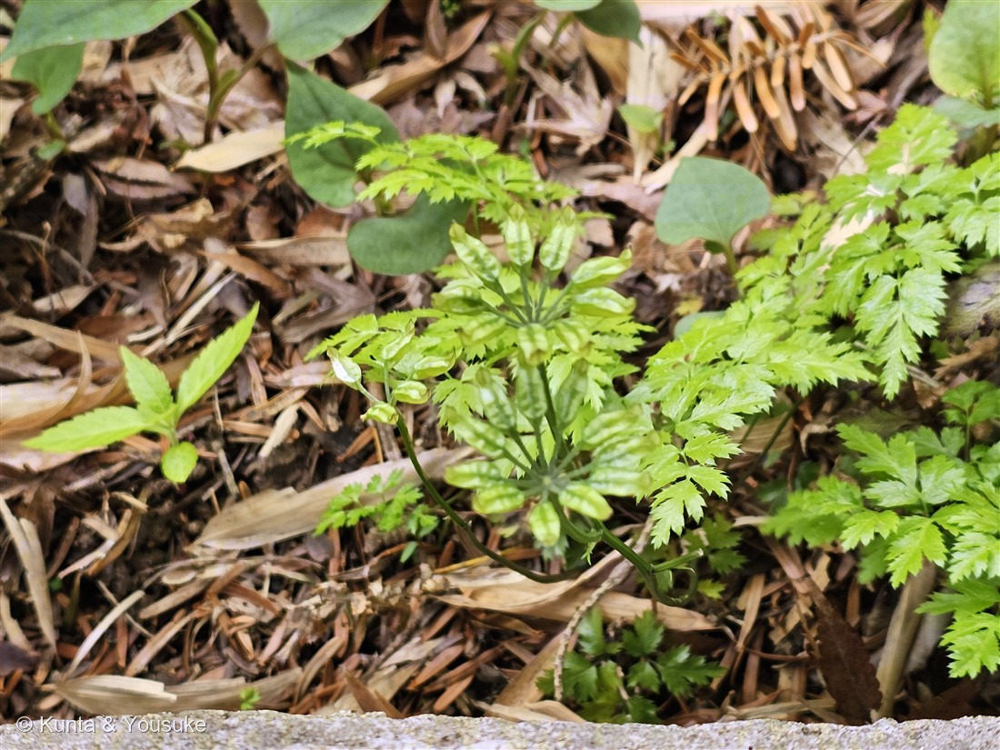
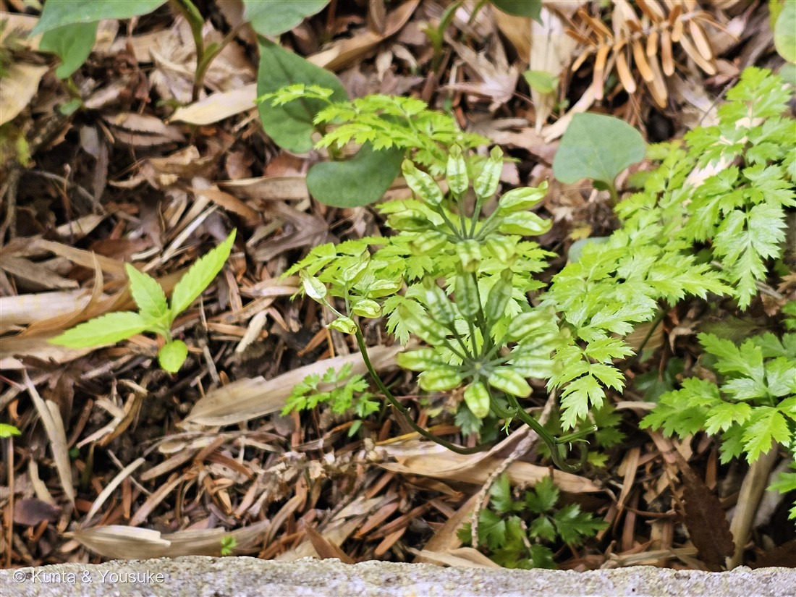
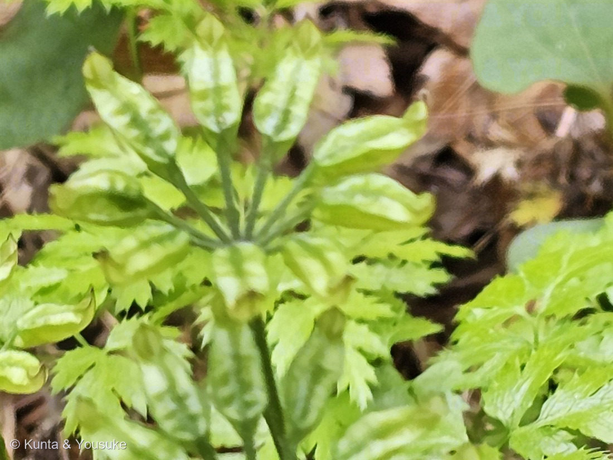

地図を読み込んでいるよ…
🔍 写真も地図も、押しているあいだ拡大して見られるよ（スマホは指を置いてすこし待ってね）。
🌍 の地図＝この子がもともと自生している場所を緑に。北海道・本州・四国。やや湿り気のある針葉樹林の林床に生える常緑の多年草。
⭐日本だけの子（北海道・本州・四国）だよ。⚠九州と沖縄は塗っていない。やや湿り気のある針葉樹林の林床——スギやヒノキの林の、しめった地面が好き。⭐常緑だから、冬でも青々とした葉で雪の下にいて、まだ寒い3〜4月に花を咲かせる。⭐そして根茎の中は鮮やかな黄色——それが生薬「黄連（おうれん）」になるんだ。
⚠ 地図は国（日本と中国だけ県・省）までしか塗れないから、ほんとうの分布より広く見えていることがあるよ。地図はだいたいの場所。正確なところは、上の文を見てね。
セリバオウレン（芹葉黄連）
Coptis japonica Makino var. dissecta Nakai
原産 · 北海道・本州・四国／やや湿った針葉樹林の林床／ 見どころ · ⭐花のあとに、めしべが風車になってほどける・つやつやの常緑の葉・⚠陽介が間違えて燻太さんが直した回
キンポウゲ科 · Ranunculaceae（オウレン属 Coptis・キンポウゲ目）
名前と学名の由来 ── 芹の葉と、黄色い根
- ⭐「セリバ（芹葉）」＝葉のかたちを、セリの葉にたとえたもの。──写真の、レースのように細かく切れこんだ葉のことだよ。2回3出複葉（3枚の小葉が、さらに3つに分かれる）で、そのひとつひとつが深く切れこむ。
- ⭐⭐「オウレン（黄連）」＝根茎の内部が、鮮やかな黄色で、よく発達していることから。⭐中国の薬草「黄連」と同じように薬用にしたので、その名前をもらったんだ。
- 属名 Coptis（コプティス）＝ギリシャ語の kopto（切る）から。葉が細かく切れこむことにちなむと言われている。⭐属名も和名も、おなじ「切れこんだ葉」の話をしているね。
- ⚠変種名は、資料によって割れている（var. dissecta とするものと、var. major とするもの）。この図鑑では、より広く使われている var. dissecta を採ったけれど、どちらの書き方も見かけることは書いておくね。
この植物のこと ── 花のあとに、風車ができる
- キンポウゲ科オウレン属の常緑多年草。高さは10〜15cmと小さい。⭐北海道から本州・四国の、やや湿った針葉樹林の林床にすむ。
- 花は3〜4月、まだ寒いうちに咲く。直径1cmほどで、⭐白い花びらに見えるものは、じつは萼片（5〜7枚）。⭐ほんとうの花弁は8〜10枚あるけれど、小さなへら形で目立たない。──149 エンレイソウ・150 ヤグルマソウ・158 クルマバザクロソウに続く、⭐「花びらが見た目どおりじゃない」仲間だね。
- ⭐雌雄異株で、雄花だけの株と、両性花をつける株がある。
- ⭐⭐そして、この子のいちばんの見どころが、花のあと。──受粉すると、1つの花の中にあった心皮（めしべのもと）が、それぞれ長い柄をのばして、放射状に開く。⭐まるで風車（かざぐるま）。写真①②の、あの姿だよ。袋果は長さ1cmほどで、中に2〜2.5mmの種子が数個入っている。
- 生薬「オウレン（黄連）」＝根茎を乾かしたもの。止瀉薬（下痢どめ）や、苦味健胃薬として使われる。⚠素人が掘って使うものではないし、⭐そもそも野草園の植物は見るだけだよ。
同定について ── ⚠ ぼくが間違えて、燻太さんが直してくれた話
⚠⚠この子は、ぼくが一度まちがえた。 ──写真を見て、ぼくはこう考えた。「細い柄が1点から放射状に出て、その先に実がついている。これは散形（さんけい）だ。散形といえばセリ科」。そしてセリ科のヤブニンジンあたりだろう、と言いかけた。
⭐そこで燻太さんが「セリバオウレンの可能性はある?」と聞いてくれた。──調べたら、そちらが正しかった。
- ⭐⭐決定的だったのはこの一文：「本来は一つの花ですが、果実が成熟するにしたがって、種子を包み込んでいる心皮という組織が離れるため、輪生状につき、まるで風車のような形をしています」。
- ⭐つまり、あれは「たくさんの花の柄」ではなく、「ひとつの花のめしべが、熟してバラけたもの」。⭐燻太さんが最初に「輪生してる」と言ったのが、いちばん正確な言い方だった。
- ⭐そしてほかの手がかりも、ぜんぶセリバオウレンを指していた：常緑で光沢のある葉（燻太さんの「つやつや」）／セリのように切れこむ2回3出複葉／花期3〜4月なので5月は果実期／となりが160 ニリンソウで、どちらもキンポウゲ科。
- ⚠ぼくの失敗のかたちは、はっきりしている。──「放射状の柄」というたった1つの形で、科まで決めようとした。⭐087 ヤマモモのときに書いた「合っている証拠の数を数えない。他を落とせるかで考える」を、自分で破りかけたんだ。
⭐ 野草園の、おなじ日の子たち
撮影は2025年5月5日、仙台市野草園。──147 サクラソウ・148 クマガイソウ・149 エンレイソウ・150 ヤグルマソウ、そして160 ニリンソウとまったく同じ日。⭐この一日だけで、図鑑に6ページが生まれたことになるね。
⚠そして、この写真を撮った1分8秒あとに、燻太さんはニリンソウの名札を撮っている。──セリバオウレンとニリンソウは、となりあって生えていたんだ。どちらもキンポウゲ科。⭐春の林床の、おなじ家族の集まりだったんだね。
参考：公益社団法人 日本薬学会「セリバオウレン」（Coptis japonica MAKINO var. dissecta NAKAI（キンポウゲ科）／葉は三角状で、いくつもの深い切れ込みがある／白く花びら状に見えるのは萼で、へら状の花びらは小さく目立たない／⭐果実が成熟するに従い、種子を包み込んでいる心皮という組織が離れるため、輪生状につき、まるで風車のような形をしている／北海道から本州、四国に分布し、やや湿り気のある針葉樹林の林床に生育する多年生草本／和名は葉をセリの葉に例え、中国の薬草である黄連と同じように薬用として用いたことから。オウレンは根茎の内部が鮮黄色でよく発達していることに由来／生薬名オウレン（黄連）、止瀉薬や苦味健胃薬）／松江の花図鑑「セリバオウレン」（キンポウゲ科オウレン属／葉は2回3出複葉で、小葉がセリの葉のように切れ込む・全長約22cm／花期3〜4月・花は直径1cm程度・萼片5〜7個・花弁8〜10個・雌雄異株で雄花と両性花／果実は長さ約1cmの袋果・種子は2〜2.5mmで縦しわ）。⚠変種名は資料によって var. dissecta と var. major に分かれる。